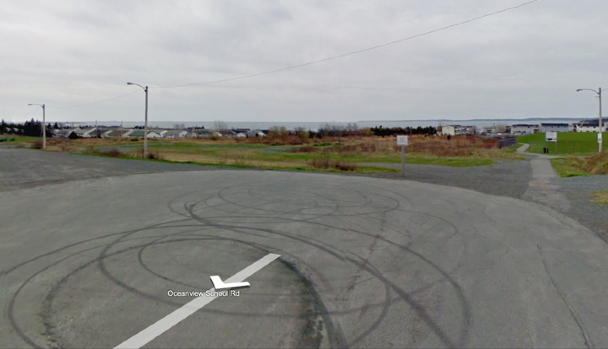
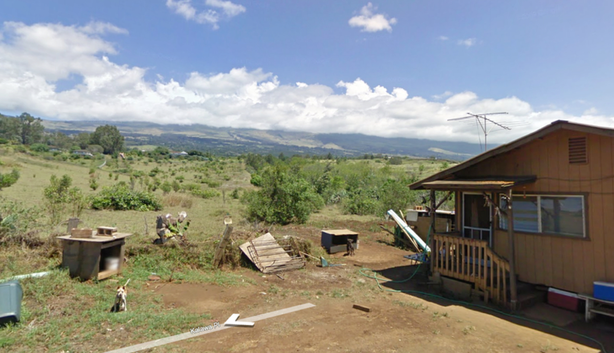
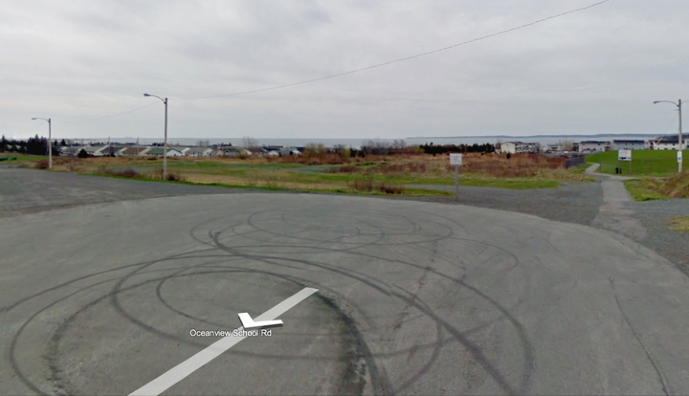
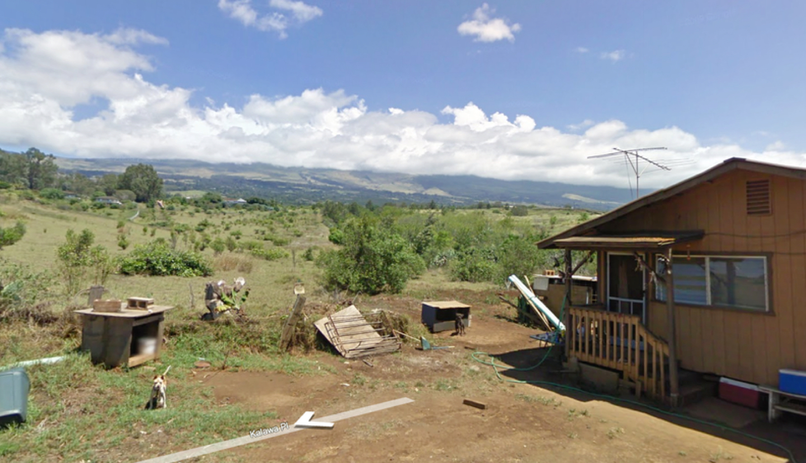

The End of the Road
The End of the Road was a self-directed interrogation of the limits of the Google Streetview project conducted sporadically from 2008 – 2010. The project explored the tension between the unlimited potential of big data and the very limited realities of physical space by documenting where the Google Streetview car had to physically stop driving and, as a result, stop capturing images. Obstacles such as closed fences, unpassable dirt roads, and even tiny dogs showed how our physical world can obstruct our virtual world.
The project ended in 2011 when, unsurprisingly, Google designed a workaround for these obstacles by including user submitted photos and who knows what else to stitch together unobstructed images of our world. Still, the project lives on as a reminder of limits of technology and the value of privacy – both as an individual right and a corporate commodity.
View the project on Are.na
 


